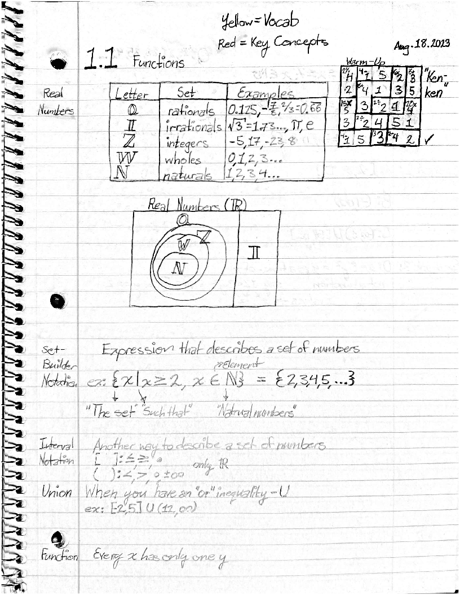
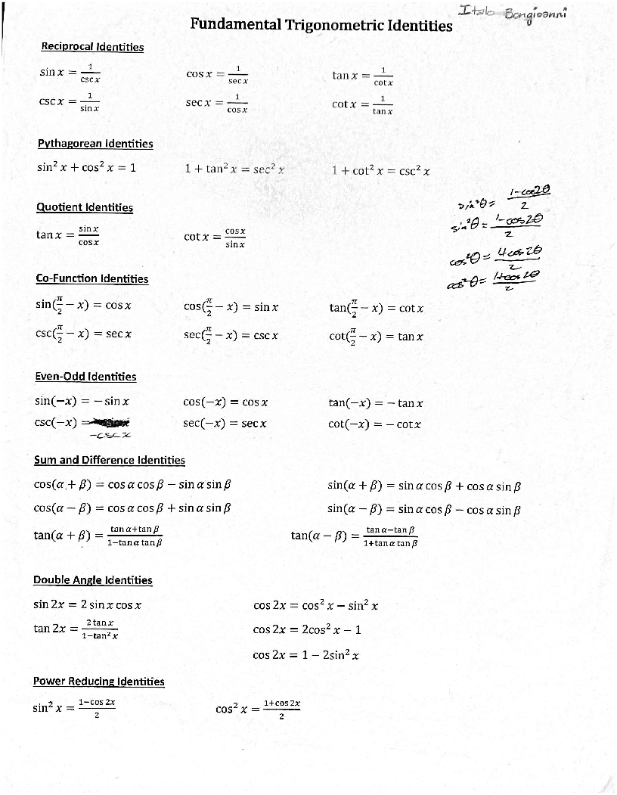

This one is pretty straight forward. I switched to a different type of notebook towards the end of the year, so hopefully that's not distracting.
I also have to apologize that section 1.7 has ink bleeding through the page making it difficult to read. Let's just say I got a little bit bored.
There could also be some of my algebra 2 notes in there, and if so, I am very sorry. Hopefully you don't get too confused.

Here are some of the handouts we got in class that I thought would be useful to whoever takes the class and loses them. Just in casies.
